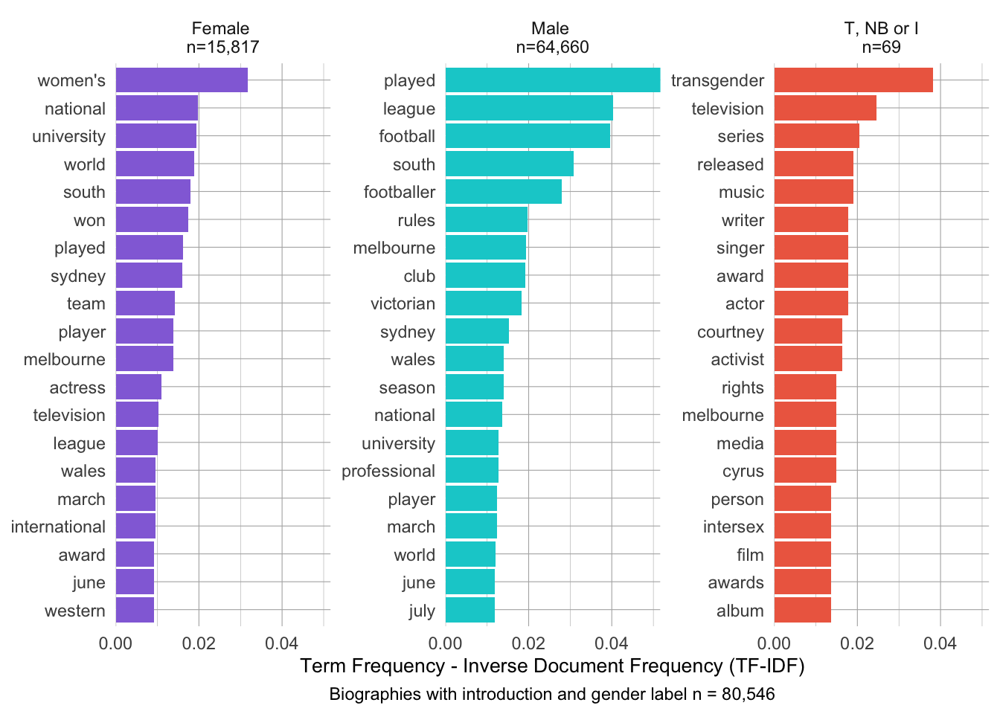

![]()

Who Counts as Australian?
The first annual report of the wikihistories project, describing how Australian people are represented in Wikipedia.
Work in progress. Not for public distribution.
Introduction
Who counts as Australian in Wikipedia and its sister-projects? How are Wikipedia articles or Wikidata items marked as ‘Australian’ by the system? How does Wikipedia define or represent ‘Australianness’? In this report, we try to address these questions using a dataset of biographical articles culled from English Wikipedia. We have two primary aims: (1) to reveal the definition of ‘Australianess’ implicit in Wikipedia’s systems; (2) to assess how well Wikipedia represents the diversity of Australians. As we will see, Wikipedia works implicitly with numerous inconsistent definitions of ‘Australianness’, but it is nonetheless possible to make some reasonable observations about how well it represents the diversity of people who make up ‘Australia’.
People can be represented in Wikipedia in many ways. They may have an empty article that redirects to another article that concerns them (e.g. Azaria Chamberlain). They may be mentioned in the text of an article (e.g. Sasha Soldatow or the ‘manual workers’ in Sydney Push). Or they might have a full-blown article devoted to their biography (e.g. Ada Cambridge). For the sake of our analysis, we focus on the third kind of representation: the biographical article. This allows us to quantify our analysis, because each article in the dataset equals one person.
We explain how we construct the dataset in Data. Broadly, we use two methods to identify ‘Australian’ biographies in Wikipedia. First, we use Wikipedia’s category system to find all biographies contained in Category:Australian people. Second, we use Wikidata’s query service to find all biographies whose corresponding Wikidata item has a property suggestive of ‘Australianness’ (e.g. a People Australia ID). Using these two methods, we identify 83,013 biographies on English Wikipedia that are marked as ‘Australian’ in some way. We enrich these biographies with additional Metadata for further analysis.
Our Analysis of the data unfolds in four main sections. In Australianness, we consider what it means for a person to be ‘Australian’ in Wikipedia. Where does the system draw the line(s) between Australians and non-Australians? We show that the system draws many different lines, which do not always conform with one another. In the subsequent sections of analysis, we consider how Wikipedia captures the diversity of Australia’s people, along the axes of Gender, Indigeneity and Historical period. We demonstrate that it is possible to make some generalisations about how Australians are represented in Wikipedia. In particular, we observe considerable normativity in the encyclopaedia: generally, Wikipedia assumes that an ‘Australian’ is a white cisgender male; only if a person departs from this norm are their racial or sexual characteristics explicitly described. While representation of some minority groups may be improving (e.g. the gap between Indigenous and settler Australians), other representation gaps remain tenacious (e.g. the gender gap).
In Conclusion: beyond bias, we make some suggestions about how Wikipedians might like to improve the representation of Australians in the encyclopaedia. As well as addressing the traditional problem of ‘systemic bias’, we suggest that Wikipedians draw attention to the representational multiplicity of Wikipedia, so that visitors and editors can become more aware of the multiple definitions of ‘Australianness’ across the Wikiverse.

Data
The code to generate this report is contained in two files in the wikihistories reports Github repository:
- who-counts-lib.R contains all the functions to import the data
- who-counts-data.R combines the functions to import the full dataset. This script can be run with
USE_CACHE <- TRUEto import the data from the saved files for this report, orUSE_CACHE <- FALSEto regenerate the data afresh from Wikipedia and Wikidata
All the source code for the analysis is included in this report, and can be viewed on Github at who-counts.qmd.
Wikipedia’s category system
From its inception, Wikipedia has provided a category system to ‘group together pages on similar subjects’, and provide useful ‘navigational links to pages in Wikipedia’. Wikipedia’s categories form a vast and complex tree. A category may contain infintely many subcategories, and those subcategories may themselves belong to infinitely many supercategories. Nearly all Wikipedia articles are categorised, partly due to the work of a task group and patrol whose job is to hunt down any uncategorised articles.
In this context, the first place we looked for biographies of Australian people on Wikipedia was Category:Australian people, which ‘lists notable Australian-born people, or people who identify themselves as Australian’. This category contains 99,626 articles on English Wikipedia, and the number has grown consistently (Figure 1).1
Not all the articles in Category:Australian people are biographies. In the first case, there are many articles about groups of Australian people, e.g. Aboriginal Victorians or Australian Chamber Orchestra. In the second case, Category:Australian people is a vast category, with 9,492 subcategories. In the trackless expanse of these subcategories, some unexpected articles make their way into Category:Australian people, such as the classic glam rock album Living in the ’70s. We explain the ‘eccentricity’ of the category graph when we analyse Wikipedia’s definition of Australianness below. For now, we simply describe our method for filtering all the non-biographies out of Category:Australian people.
To filter out the non-biographies, we rely on Wikidata. We fetch the Wikidata item for each article in Category:Australian people, and check to see if it has property P31(Q5), ‘instance of:human’. While the possession of P31(Q5) is not a perfect signal that an article is a biography, we find that this criterion filters out nearly all the non-biographies. Applying this criterion, we identify 81,493 biographical articles in Category:Australian people.
Wikidata’s query service
Wikidata provides an alternative method for finding Australian biographies: its query service. Using the query service, it is possible to search for Wikidata items that possess given properties. If these Wikidata items have a corresponding Wikipedia page, the link can be automatically retrieved.
It is more complex to find the ‘Australians’ in Wikidata than in Wikipedia. Wikipedia provides a single master-category for ‘Australian people’. Wikidata does not. Instead, Wikidata can mark a person as ‘Australian’ in two main ways:
- It can explicitly link a person to Australia (Q408) through properties such as citizenship (P27), place of birth (P19) or place of death (P570); or
- It can implicitly link a person to Australia by identifying them in a database of Australians, such as the Dictionary of Australian Biography (P1907), Indigenous Australia (P9246), or Convict Records of Australia (P9919)
We queried Wikidata by 45 such properties suggesting Australianness. Using these properties, we were able to identify 85,773 Wikidata items representing Australian people. Of these Wikidata items, 63,692 items had a corresponding Wikipedia article.
The two datasets overlap substantially, but not completely (Figure 2). There are thousands of biographical articles in Category:Australian people whose Wikidata items do not clearly identify them as ‘Australian’. Likewise, there are hundreds of Wikidata items whose corresponding Wikipedia articles do not appear in Category:Australian people, even though the Wikidata item has P31(Q5), ‘instance of:human’, and also contains one or more ‘markers of Australianness’.
| Dataset | Number of Articles |
|---|---|
| Person only found by querying Wikidata | 1520 |
Person only found in Category:Australian people |
19321 |
| Person found in both datasets | 62172 |
Metadata
We combine our two datasets into a single larger dataset of 83,013 articles. To enable analysis of these articles, we then enrich them with three kinds of metadata:
- Using the Wikidata Action API, we find each person’s dates, birthplace and gender.
- Using the Wikipedia Action API, we download the introduction of each article for text analysis.
- Using the XTools API, we download page usage data for each page, including the page creation date, assessment class (e.g. Good, Featured), pageviews and number of edits.
Analysis
Australianness
In this report, we do not seek to define what it means to be ‘Australian’. Instead, we aim to identify the ‘markers of Australianness’ that define what it means to be ‘Australian’ in Wikipedia. We have already introduced these markers in the Data section. In Wikipedia, the primary marker of Australianness is membership of Category:Australian people. In Wikidata, no marker can be said to be primary, but the most frequent in our dataset is P27(Q408), a property meaning that a person is a ‘citizen’ of Australia. In both cases, we will see that there is a sharp divide between the way Wikipedians have defined the marker, and they way they have used it.
There are two reasons we refrain from defining ‘Australian’ for ourselves. In the first case, our opinion is not at all important—what matters is Wikipedia’s opinion. In the second case, it is exceptionally difficult to define ‘Australian’ in a non-arbitrary way. In two dimensions, space and time, the concept of ‘Australian’ poses startling difficulties.
In space, it is difficult to judge whether a person is close enough to Australia to count as Australian. At one end of the specturm is someone who is born, lives and dies in Australia, such as Oodgeroo Noonuccal. There can be no dispute that such a person is Australian. At the other end of the spectrum is someone who has only a passing cultural or economic connection to Australia, such as Steve Wozniak, one of the more surprising members of Category:Australian people. Then there is the problem of the diaspora. Are the children of Australians Australian, even if born overseas? If, like Rupert Murdoch, you leave Australia and renounce your citizenship, do you remain Australian? There may be easy answers to these questions in specific contexts, for example, when calculating a person’s tax liability or entitlement to vote, but in the context of an encyclopaedic project like Wikipedia, they cannot be easily resolved.
In time, it is difficult to judge when in history it becomes reasonable to describe someone as ‘Australian’. Humans first arrived in Australia some 60,000 years ago, but they did not call the continent ‘Australia’. The term ‘Terra Australis’ (‘Southern Land’) was coined by 16th-century Europeans. At this time, ‘Terra Australis’ was merely a proposal, as no European had visited either Australia or Antarctica. In the end, neither Australia nor Antarctica matched European expectations about the ‘Southern Land’, though Australia, being the first that Europeans visited, acquired the name. New South Wales was invaded by the British in 1788. The term ‘Australia’ was substituted for ‘Terra Australis’ in 1813. The colonies of Australia federated into a single Commonwealth in 1901. The resulting Commonwealth of Australia only achieved full independence from Britain in 1988. The problem of time is compounded by geology. In the course of Australia’s human occuption, the very landmass has altered considerably. Only 10,000 years ago, the Australian mainland, Papua New Guinea and Tasmania formed a single contiguous landmass that geologers call Sahul. Are all the people who occupied Sahul at any point in time ‘Australians’? Or can only residents or citizens of the country ‘Australia’ be so named? Like space, time wreaks havoc on the category ‘Australian’.
The editors of Wikipedia and Wikidata grapple with both these problems. The result is a kind of categorical anarchy, where different parts of the system work with different concepts of ‘Australianess’ and apply different criteria of connection. It is for this reason that we talk of ‘markers of Australianness’ in Wikipedia. How do these markers work?
In the category system
The primary marker of Australianness in Wikipedia, as we have seen, is membership of Category:Australian people. The category offers simple criteria for membership:
This category lists notable Australian-born people, or people who identify themselves as Australian.
A user who clicks on the hyperlink ‘Australian’ will be taken to the Wikipedia page for Australia, which defines Australia as follows:
Australia, officially the Commonwealth of Australia, is a sovereign country comprising the mainland of the Australian continent, the island of Tasmania, and numerous smaller islands.
These definitions seem to offer a strong answer to the problems of space and time. ‘Australia’ is the ‘Commonwealth of Australia’, the sovereign state that has existed since 1901. In space, a person must be ‘born’ in Australia, or ‘identify themselves’ as a member of the country. In time, Australia is the Commonwealth of Australia, and so has only existed since 1901.
The problem is, this explicit definition does not at all describe the contents of Category:Australian people. In the spatial dimension, the category includes living people such as Steve Wozniak and Darrell Duffie who were neither born in Australia nor identify themselves with it. In the time dimension, the category includes many historical figures who long predeceased the Commonwealth of Australia, such as Bennelong, Mary Reiby, Robert Lowe and Louisa Atkinson. Finally, it lists thousands of entities that aren’t people, such as First Ever, the sportswear manufacturer, and ‘Hand on Your Heart’, the 1989 single by Kylie Minogue. How has Category:Australian people expanded to include so many pages that contradict its own explicit definition?
The answer lies in the category’s size. When editors include articles in Category:Australian people, they do not necessarily do so intentionally. Category:Australian people is the root node of a vast category graph. The editor who categorised Steve Wozniak as a staff member of the University of Technology Sydney was probably unaware that they were thereby categorising Wozniak as an ‘Australian person’. The category for academic staff at UTS lies several layers deep in the category graph, 4 steps away from the root (Figure 3). Perhaps an editor may quibble that a person who works at UTS is not necessarily ‘from Sydney’, but in the present state of the category graph, there is no other way to mark a staff member of UTS. The category graph is strictly hierarchical. A subcategory cannot be removed from its parent category for the sake of a single page.

Category:Australian people has 9,492 subcategories, many of which are even farther from the root than the staff of UTS. We can get a sense of how vast this structure is by taking diameter of the category graph. In this case, the diameter is 11, which means that the most distant subcategory of Category:Australian people is 11 steps away. Such distant nodes are called ‘eccentric’ in graph theory. In this case, the most distant subcategory truly is eccentric: Category:Custard (band) compilation albums does not include articles about ‘Australian people’ at all, but about indie rock records. This case is extreme. The case of UTS staffmembers is more typical. If we consider all the articles that have been placed in Category:Australian people or its subcategories, we find that the subcategories used are on average 3.17 steps away from the root, with a standard deviation of 0.95. In the typical case, when an editor adds an article to an ‘Australian people’ subcategory, the subcategory is 2-4 steps away from the root. It seems likely that editors are mostly unaware of the category graph as a whole. Editors work locally, trying to find the best categorisations for their articles, while Wikipedia’s systems work globally, enforcing the hierarchical logic of the enormous and usually invisible category graph.
There is thus a contradiction between the global and local logics of the category graph. Frequently, the category graph also contradicts the actual content of the encyclopaedia. First Ever is categorised as an ‘Australian person’ even though the text of the article identifies it as ‘an Australian manufacturing company’.2 These contradictions breed a pervasive categorical anarchy. Seen from afar, Wikipedia is extremely lax about who or what counts as ‘Australian’. A person—or even not a person—can be categorised as ‘Australian’ for whatever reason seems reasonable in the local context. Such laxity is probably necessary to Wikipedia’s encyclopaedic ambitions—how else could the vague concept of ‘Australian person’ ever find a place in Wikipedia? Wikidata is a different beast. Rather than a collection of textual articles that can speak for themselves, it is a database of structured facts (called ‘claims’) which are supposed to provide a reliable machine-readable knowledge graph. Can categorical anarchy prevail in such a system?
In Wikidata
Wikidata’s contributors are well aware of the difficulties of space and time. The simplest way to mark someone as ‘Australian’ in Wikidata is to give ‘Australia’ as the person’s ‘country of citizenship’ (P27). Our dataset contains 59,259 ‘Australian citizens’ according to P27. A glance at the Talk page for P27 reveals that Wikidata’s editors are well aware of the problems with trying to categorised people as ‘Australian’ in any stable way.
The user Ghouston clearly clearly articulates the problem of time in a post from 2018:
It’s not easy. Australian citizenship didn’t exist before 1949, yet Australia as a federation has existed since 1901 and the term “Australian” was in use in the 19th century. To say that the United Kingdom was created in 1927 or the Netherlands perhaps in 1815 or 1945 or China in 1949 is to ignore much of the history of these countries as states.
Two years later, Ghouston provides additional sources and mentions a possible solution:
Separate items for citizenships and nationalities have been proposed previously. Perhaps it would help. The term “Australian” for people living in Australia was already used in the 19th century, before Australia had even been federated as a state, e.g., [2]. According to [3], Australia started issuing passports after federation, and didn’t even restrict it to British subjects until 1938, but it seems that passports were not used much prior to WW1, and there was a more flexible attitude to nationality.
At the time of writing, there is no Wikidata property for ‘nationality’. Instead, the property of citizenship is limited according to the ‘inception’ (P571) of the given country and the death date of the given person. The start date of Australia is given as 1 January 1901 in Wikidata. If a person is assigned Australian citizenship in Wikidata, and their death date occurs before 1 January 1901, then a warning appears in their Wikidata page. At the time of writing, the Wikidata item for colonial poet Charles Harpur contains such a warning (Figure 4). Harpur, who proudly described himself as as ‘An Australian’ in newspaper publications from the 1830s, died in 1868.

This solution combines flexibility with clarity.
- Flexibility: It is possible to mark the ‘Australianness’ of Charles Harpur and others who have been identified as Australian throughout history.
- Clarity: Wikidata provides clear guidance to its contributors through the warning banner. As far as Wikidata is concerned, Australian citizenship was available to people from 1901.
The price of this clarity and flexibility is inconsistency and quixotism.
- Inconsistency: Wikidata flatly contradicts itself as far as historical figures like Charles Harpur are concerned. Was Harpur a citizen of Australia or not? Wikidata also contradicts, or at least brings into question, its own definition of ‘citizenship’. Wikidata defines citizenship (P27) thus: ‘the object is a country that recognizes the subject as its citizen’ This definition is not reflected in P27’s rules: all that is required is that the country exists prior to the supposed citizen’s birth date. If Harpur were posthumously recognised as a citizen by the Commonwealth of Australia, this could not currently be reflected in the database. The warning banner would remain.
- Quixotism: As Ghouston himself observes, Australia did not have an official system for conferring citizenship until 1949. By seeming to choose 1 January 1901 as earliest permitted date, Wikidata has invented its own concept of Australian citizenship. Is this quixotism consistent with Wikidata’s self-description as a ‘secondary database, collecting structured data’? Does Wikidata collect structured data, or does it structure collected data?
Wikimedians are aware of the difficulty of time. The state of P27 suggests that they are content for the minute to leave the difficulty unresolved.
The difficulty of space is less clearly articulated on the talk page for P27 (‘country of citizenship’). Perhaps this is because the concept ‘citizenship’ presupposes a deep and publicly sanctioned connection between the person and the country. In a sense, Wikidata delegates the question of a person’s spatial connection to Australia, by recording when a person appears in a known database of Australians. These databases make their own decisions about the ‘Australianness’ of their subjects. The Dictionary of Australian Biography, for example, does not required its subjects to be Australian at all, as explained in their FAQs:
Do you have to be an Australian to be in the ADB?
The ADB includes anyone who has made a significant contribution to the Australian nation.
The AusStage database, meanwhile, records any person who ‘contributed’ in some way to a theatrical performance in Australia, or to an overseas performance of an Australian theatrical work. AusStage and the Australian Dictionary of Biography provide very broad markers of Australianness. By contrast, the Re-Member database of the Parliament of Victoria provides a stricter marker of a person’s Australianness. To appear in Re-Member, a person must be a former member of the Parliament of Victoria. We identified dozens of other databases that indicated ‘Australianess’ in Wikidata. When a Wikimedian links a person to the Australian Dictionary of Biography (P1907), AusStage (P8292), Re-Member (P8633), or some other database of Australians, the linked database will encode a different answer to the question ‘Who Counts as Australian?’
This raises the question: how do these different properties overlap in Wikidata? Are there some markers of Australianness that tend to go together? Are there others that exclude each other? For example, we might assume that if a person is linked to the Convict Records of Australia database (P9919), they should not usually have Australia as their place of birth, since the great majority of convicts were transported from Britain and Ireland, rather than between the colonies.
To explore the connection between different markers of Australianness, we generated a correlation plot between the 20 most common Wikidata properties of the 45 that we queried (Figure 5). A red square indicates a positive correlation between two Wikidata properties: for example, a person with an Australian Dictionary of Biography ID (aus_dictionary_bio) is highly likely also to have a People Australia ID (people_of_aus). A blue square indicates a negative correlation between two properties: for example, a person marked as a citizen of Australia is highly unlikely to have been assigned an AustralianFootball.com ID (aus_football).

Only a few of the properties are correlated, and there are only a couple of strong correlations in the matrix.
Many of the strong correlations reflect relationships between the databases on which Wikidata relies for information. For example, it is not surprising to see a strong correlation between Australian Dictionary of Biography ID (aus_dictionary_bio), Labour Australia ID (labour_of_aus), People Australia ID (people_of_aus) and Obituaries of Australia ID (obit_of_aus). These four databases are all run by the National Centre for Biography at the Australian National University, and are tightly interconnected. Every person in Obituaries Australia, Labour Australia or the ADB automatically receives a People Australia ID.
Other strong correlations represent a similarity of subject-matter. For instance, three Wikidata properties link to databases of Australian artists (nat_gallery_vic_artist, aus_printmakers, design_and_art_aus). A person who has an ID in one of these external databases is likely to have an ID available in the others. Similar explanations apply to sporting databases (atheltics_aus and aus_olympics) and newspaper databases (obit_of_aus).
Overall, the lack of correlation between the properties reflects the heterogeneous nature of Wikidata. It is a vast and exceptionally flexible database, and it is possible for different communities of contributors to build up data in quite unrelated areas. This is illustrated nowhere better than in the negative correlation between AustralianFootball.com ID and the other Wikidata properties. Fans of Australian Rules Football have painstakingly entered data about hundreds of professional footballers into Wikidata, without troubling to mark these records with other properties such as Trove ID or citizenship of Australia. The shape of Wikidata could easily change if another committed group of editors decided to document their own subculture in the database. ‘Australian’ is an extremely uneven and inconsistent idea in Wikidata.
Gender
Although it is impossible to provide a unitary definition for ‘Australian’ in Wikidata and Wikipedia, we have shown that it is possible to derive a large list of people who are marked as ‘Australian’ in some way across the encyclopaedia and database. What is the composition of this list? We first consider the gendered composition of the dataset, before turning to the representation of Indigenous Australians and Torres Strait Islander peoples in the next section.
To determine the gender of a person in our dataset, we rely on the Wikidata property P21:Sex or gender. In our dataset, nearly all records have a sex or gender recorded (Figure 6). Only 2,065 records lack a P21 statement about their sex or gender.
| Sex or Gender Label | Total |
|---|---|
| faʻafafine | 1 |
| female | 23557 |
| genderfluid | 7 |
| genderqueer | 3 |
| intersex | 3 |
| intersex woman | 1 |
| male | 79386 |
| non-binary | 32 |
| trans man | 5 |
| trans woman | 31 |
| transgender | 2 |
| NA | 2065 |
Weathington and Brubaker (2023) have strongly critiqued Wikidata’s representation of sex and gender, observing that “Queer identities are recorded in a database in clunky, inaccurate, or self-contradictory ways” [p. 2] and that the database ignores the individual’s right to determine their own sexual presentation. Nonetheless, we are compelled to rely on Wikidata’s representation of individuals’ sex and/or gender if we wish to assess its representation of human diversity in Australia. To this end, we categorise our dataset into three broad groups: Male, Female and Trans, Non-Binary or Intersex. While we may assume that most of those marked as ‘male’ or ‘female’ are cis-male or -female, we cannot determine this from the available data, and so opt for the less specific ‘male’ and ‘female’.
Female biographies are clearly under-represented among Wikipedia’s Australian articles. (Figure 6) shows all Wikipedia biographies that appear in Category:Australian people, or whose Wikidata item contains a marker of Australianness, categories by gender. The gap between Male and Female biographies appears to have remained constant over time (Figure 7). Viewing the data on a logarithmic scale emphasise the parallel track of Male and Female biographies in Australian Wikipedia, while also allowing us to visualise the similar growth of Trans, Non-Binary or Intersex biographies (Figure 8).


Not only are male, female and LGBTQI+ Australians represented in different numbers in the encyclopaedia, they are represented by different words. To show this, we downloaded the introductions of each article in the encyclopaedia, and used the tf-idf statistic to determine which words were most distinctive for each group of biographies. Which words tend to appear more often in the introductions of articles about Male, Female and Trans, Non-Binary and Intersex Australians?

Figure 9 discloses two significant patterns:
- Explicit marking of non-Male genders: First, Wikipedia articles are more likely to explicitly mention the sex or gender of a
FemaleorTrans, Non-Binary or IntersexAustralian. The high tf-idf score for “women’s” in biographies of Females probably reflects the fact that female sporting teams are often have “women’s” in their names. Thus Sam Kerr is said to represent Australian in the “national women’s team”, while Harry Kewell was simply a member of “the Australian national team”. The situation forTrans, Non-Binary and IntersexAustralians is even more marked. ‘Transgender’, ‘sex’ and ‘woman’ all appear as distinctive terms in the introductions of Wikipedia biographies in this group. - Dominance of sport and entertainment: Across all three gender categories, sport and entertainment are dominant themes. The
Malebiographies seem less likely to describe entertainers than those in the other categories. Unsuprisingly, theTrans, Non-Binary and Intersexbiographies seem more likely to discuss social affairs, ‘activist’ and ‘rights’ being prominent terms in the introductions of these biographies.
The data support the views of Weathington and Brubaker (2023). In Australian Wikipedia, maleness is the unmarked default. Female and especially Trans, Non-Binary and Intersex Australians are described using terms such as ‘women’ or ‘transgender’; there is no need to explicitly mention that a person is male or cisgender. In the case of Trans, Non-Binary and Intersex people, this explicit marking of gender goes a step further. Australians in this group are likely to be described as ‘activists’, presumbly on gender issues. Biographies of Trans, Non-Binary and Intersex Australians problematise gender in a manner that biographies of of Male Australians do not.
Wikipedia’s defaulting to malenes probably reflects the linguistic habits of broader Australian society, but it could also be exacerbated by the encylopaedia’s obsession with sport and entertainment. Both sport and entertainment are highly gendered fields. Men and women compete in gendered competitions such as the soccer or cricket World Cups and receive gendered commendations such as Best Actress at the Academy Awards. While Male Australians may dominate non-Male Australians in fields such as politics, business and the arts, these fields are no so explicitly gendered. Sam Kerr may indeed be captain of the “women’s national team,” but it makes no sense to describe Vanessa Hudson as the CEO of a “women’s corporation.” Sport and entertainment are fields that reflect society’s deepest-held and most immoveable convictions. Wikipedia’s powerful focus on these fields may place the encyclopaedia behind other parts of Australia in the evolution of non-gendered language.
Finally in this section, we consider the attention received by biographies in these three groups. Which Australians are the focus of editor activity, and which are of most interest to readers? We used the XTools API to download page usage statistics for articles in each group. Figure 10 gives a snapshot of this information.
| gender | n | Pageviews (mean) | Revisions (mean) | Editors (mean) | Watchers (mean) | Weeks since last edit | Good/Featured |
|---|---|---|---|---|---|---|---|
| Trans, Non-Binary or Intersex | 69 | 13644.7 | 424.6 | 164.2 | 37.2 | 8.5 | 1.4% |
| Female | 16560 | 1391.2 | 105.5 | 49.9 | 2.8 | 22.7 | 0.6% |
| Male | 66375 | 882.8 | 103.2 | 49.5 | 2.1 | 31.5 | 0.6% |
Figure 10 reveals a stark contrast between readers and editors of the encylopaedia. Editors spend roughly equal effort on the Male and Female biographies. The number of revisions for each biography, the number of editors, and the time elapsed since last edit are all similar. The result is that Wikipedia’s editors expend a roughly 4 times the effort maintaining Male biographies on Wikipedia than Female ones. Readers of the encyclopaedia, however, have different priorities. Although view biographies of Male Australians more often than Female, an individual Female biography can expect to be viewed roughly 1.6 times more often than any given biography of a Male Australian.
Biographies of Trans, Non-Binary or Intersex Australians, meanwhile, receive a great deal of attention from both editors and readers compared to biographies in the other groups. Given there are only 69 biographies in this group, the numbers are difficult to compare. Editors probably pay extra attention to these pages because they are more prone to vandalism by internet trolls. There would likely be subsets of the Male and Female pages at risk of similar vandalism, which would have a similar pageview and edit profile. It is nonetheless sadly predictable that biographies of Trans, Non-Binary or Intersex Australians should have such high page activity on Wikipedia today.
In conclusion, it seems that the gender gap on Australian Wikipedia is wide, and is not currently narrowing. Despite the under-representation of women in the encyclopaedia, editors appear to devote equal attentions both to Male and Female biographies. The number of non-cisgender biographies appears to be very small—though it is possible that many non-cisgender Australians have fallen into the Male and Female groups in our analysis due to the crude categorisation method. This small group of non-cisgender biographies receieve a great deal of attention. The most likely reason would appear to be vandalism, though we have not investigated this hypothesis. Wikipedia appears to reflect aspects of Australian gender culture, though the gender gap is probably inflated by the encyclopaedia’s strong focus on sport and entertainment, which are highly gendered even by comparison to other fields of social endeavour. This gender gap is reflected in the encyclopaedia’s language as well as in the sheer number of articles and editors’ activities upon them. It appears likely that Wikipedia is behind Australian society generally in its representation of women, given that biographies of Female Australians are so much more likely to be viewed than Male biographies. If more Female Australians were represented in the encylopaedia, would this ratio change? If the number of Male and Female articles were equal, would readers still prefer to read Female Australians’ biographies, or would their average interest decline as the total increased? At this point, we can only speculate.
Indigeneity
The distinction between ‘settler’ and ‘indigenous’ Australian pervades Wikipedia in a cryptic way. Race and ethncity are portrayed in a lopsided manner in Wikipedia, much like gender. In English Wikipedia, Mandiberg (2023) observes, people are not officially classified by ‘race’, but whiteness is assumed as a default, and a person is far more likely to be categorised by their ethnic or national origin if they are non-white.
There is no explicit category for ‘settler’ or ‘white’ Australian. There are categories for Category:Immigrants to Australia and Category:Australian people of European Descent, but these are applied only haphazardly to indicate the ‘settler’ status of a minority of Australians. A good example is Tony Abbott. According to his Wikipedia biography, he was born in London to English parents, and ‘migrated to Australia at the age of two’. His page is nearly 20 years old, and has been edited more than 4000 times.. Nonetheless, no-one has thought to categorise him either as an ‘immigrant’ or as an Australian ‘of European descent’. Extending Mandiberg’s arguments, we can hypothesise that ‘settler’ status is assumed in Australian Wikipedia, and a person’s whiteness or migrant status is considered unremarkable if they are British. We substantiate this hypothesis below.
There may be no single category for ‘settler’ or ‘white’ Australian, but there is certainly a single overarching category for Indigenous Australian people. Within this category, editors are instructed to sub-categorise Aboriginal and Torres Strait Islander Australians as precisely as possible (Figure 11). These subcategories fall into three main kinds:
- Sub-categories for mob or language group, e.g. Category:Pitjantjatjara people.
- Sub-categories for occupation, e.g. Category:Indigenous Australian linguists (Curiously, neither guide nor tracker is considered an occupation in this scheme.)
- Miscellaneous subcategories, including Category:Members of the Stolen Generations, Category:Last known speakers of an Aboriginal language, Category:Indigenous Australian feminists and Category:Australian Aboriginal elders.

Template:Category diffuse instructs editors to categorise Indigenous Australian People more preciselyCategory:Indigenous Australian people is actually nested quite deeply within the Australian category graph (Figure 12). Figure 12 may at first be confusing to Australian readers, because it is common in Australia to refer to Aboriginal and Torres Strait Islander people as “First Nations Australians.” In English Wikipedia’s category graph, however, the term “First Nations” is used the Canadian sense.3 In this instance, Wikipedia’s category graph is potentially incendiary, because it appears to imply there is no special connection between Indigenous Australians and the continent to which they are indigenous. The overarching Category:Australian people by ethnic or national origin is organised predominantly by continent or region. There are sub-categories for Australians of African, Asian, Carribean, Latin American, Middle Eastern, North American and Oceanian descent. There is no category for “Australians of Australian descent”, nor is Category:Australian people of Indigenous Australian descent included as a subcategory of Category:Australian people of Oceanian descent.4 By contrast, Category:Australians of First Nations descent is included as a subcategory of Category:Australian people of Canadian descent, which is itself a subcategory of Category:Australians of North American descent. In this local portion of the graph, the link between First Nations Canadians and Canada is formally encoded. The link between Indigenous Australian people and Australia is not. A naïve reader of the graph (such as a computer program) might erroneously conclude that First Nations Australians have the same relationship to Australia as Indigenous Australians.

In Wikipedia’s defence, the indigeneity of Indigenous Australians is encoded in other ways. In this local portion of the graph, a human can see from the labels of Category:Australian people of Indigenous Australian descent and Category:Indigenous Australian people that people in these categories are indigenous to Australia. Looking beyond this local portion of the graph, we can also see that Category:Indigenous peoples of Australia is a subcategory of Category:Indigenous peoples of Oceania. It is nonetheless curious that the local portion of the graph that classifies Australians by ‘ethnic or national origin’ should de-emphasise Category:Indigenous Australian people.
The situation is different for other countries in English Wikipedia. Other settler-colonial countries include categories for their own indigenous peoples directly beneath the super-category for people by ethnic or national origin. For example, Category:Indigenous Mexicans is a direct subcategory of Category:Mexican people by ethnic or national origin, while the analogous Australian category, Category:Indigenous Australian people, is two steps deeper in the graph. A similar pattern holds for other settler-colonial states. New Zealand, New Caledonia, South Africa and the United States all include top-level categories for their Indigenous peoples under the people by ethnic or national origin super-category.
There is a second notable difference between the category graphs for Australia and Mexico. We have seen that Australia’s Category:Australian people of indigenous peoples descent is used to classify people who are indigenous anywhere. The analogous Mexican category, Category:Mexican people of indigenous peoples descent, is used exclusively to classify indigenous peoples of Mexico itself. Brazil and Argentina similarly reserve their ‘indigenous peoples’ category for their own indigenous peoples.
Australia is not entirely alone. The subgraph for Category:Japanese people by ethnic or national origin also obfuscates the indigeneity of Japan’s indigenous peoples. There is no explicit category for Japanese people ‘of indigenous descent’. Instead, Category:Japanese Ainu people is included as a subcategory of Category:Japanese people of East Asian descent. In this way, the link between Ainu people and the region is locally marked in the category graph, but one must look elsewhere in the graph to discover that Ainu people are indigenous to Japan.
It is clear that quantifying indigenous representation in Wikipedia is a fraught exercise. Scholars are well advised to carefully consider how indigeneity is understood in different parts of the world, and then to pay close attention to the particular structure of ethnic and national classification in any particular part of Wikipedia.
Nonetheless, we can use the category graph to estimate the number of biographies of Indigenous Australians in Wikipedia. Figure 13 suggests that in recent years, Wikipedians may have begun to address the representation gap between Indigenous and settler Australians. Figure 13 shows the proportaion of biographies under Category:Australian people of Indigenous Australian descent as a proportion of all biographies in Category:Australian people. The representation gap for Indigenous Australians is not so stark as the representation gap for non-male Australians. According to the Australian Census, the number of Indigenous Australians grew from 2.5% of Australia’s population to 3.2% between 2011 and 2021.. In our estimate, the proportion of Indigenous biographies in Category:Australian people, went from 2.35% on January 1 2011 to 2.09% on January 1 2021. At the time of our data collection, the proportion had risen again to 2.21%. Although comparison with the census would suggest that Wikipedia under-represents Indigenous Australians, the representation gap is currently narrowing.

The situation in Wikidata is made simple by the fact that it has no system for ethnic or national classification. There are two main markers of indigenity for Australians in Wikidata:
- A person’s ‘description’ may mention their indigeneity. For example, Bennelong is described as an ‘Eora interlocutor with the British in Australia and the United Kingdom’. To obtain an estimate of Indigenous Australians in the Wikidata data, we have used the crude method of seraching for known keywords, including ‘indigneous’, ‘aboriginal’ and ‘eora’, then scanning the results by eye to exclude false positives (for example Judith Wright, who is described as an ‘Indigenous rights activist’ on Wikidata). TODO: Kelly, I think we need to do this again using the additional 18000 records from Category:Australian People
- A person may be linked to a record in the Indigenous Australia database (P9246). At the time of writing, the Indigenous Australia database contains 973 entries for Indigenous Australians. Of these 973, 304 have been linked to a Wikidata item.
Historical period
- size in bytes
- pageviews
- article ratings
- number of edits
TODO: Dig into category graph to explore gender and indigeneity.
Conclusion: beyond bias
TODO
References
Mandiberg, Michael. 2023. “Wikipedia’s Race and Ethnicity Gap and the Unverifiability of Whiteness.” Social Text 41 (1 (154)): 21–46. https://doi.org/10.1215/01642472-10174954.
Weathington, Katy, and Jed R. Brubaker. 2023. “Queer Identities, Normative Databases: Challenges to Capturing Queerness On Wikidata.” Proceedings of the ACM on Human-Computer Interaction 7 (CSCW1): 84:1–26. https://doi.org/10.1145/3579517.
Footnotes
The growth was calculated using the
timestampdata returned by API:Categorymembers. Thetimestamprecords when an article, file or subcategory was included in a given category. The documentation does not explain how the inclusion time is calculated for pages that are removed from and then re-included in a category. If an article was included in multiple subcategories of Category:Australian people, then the earliest timestamp was used to calculate its position in the figure.↩︎In this case, the article falls under Category:Clothing brands of Australia, which is a distant subcategory of Category:Australian designers, which is then linked through a number of other categories to Category:Australian people.↩︎
This has the notable corollary that there are no categories in Wikipedia for Métis or Inuit Australians.↩︎
In other parts of English Wikipedia, Australia is included as part of Oceania. For instance,
Category:British people of Australian descentis a subcategory ofCategory:British people of Oceanian descent. The same holds true for American, French, and Indian people of Australian descent.↩︎
Citation
BibTeX citation:
@report{tall2023,
author = {Tall, Kelly and Falk, Michael and Ford, Heather and Pietsch,
Tamson},
publisher = {wikihistories project},
title = {Who {Counts} as {Australian?}},
number = {1},
date = {2023-11-08},
url = {https://wikihistories.github.io/reports/who-counts.html},
langid = {en}
}
For attribution, please cite this work as:
Tall, Kelly, Michael Falk, Heather Ford, and Tamson Pietsch. 2023.
“Who Counts as Australian?” 1. wikihistories project. https://wikihistories.github.io/reports/who-counts.html.